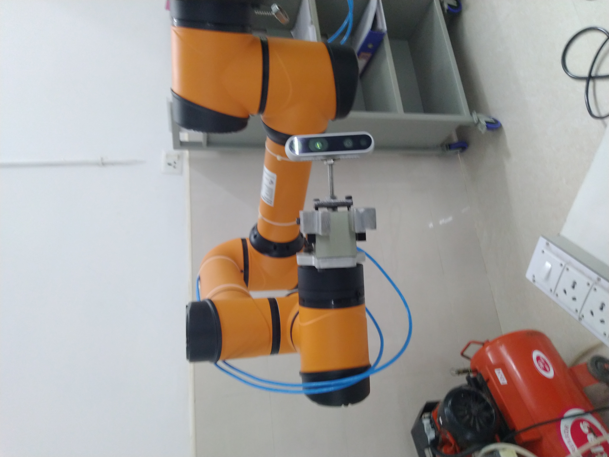
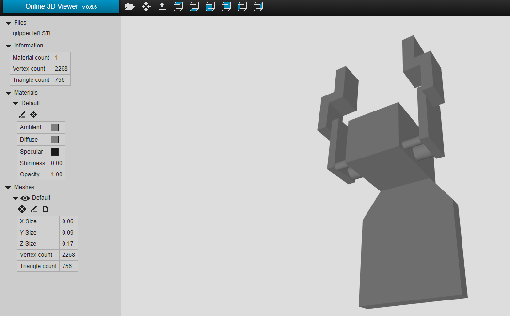
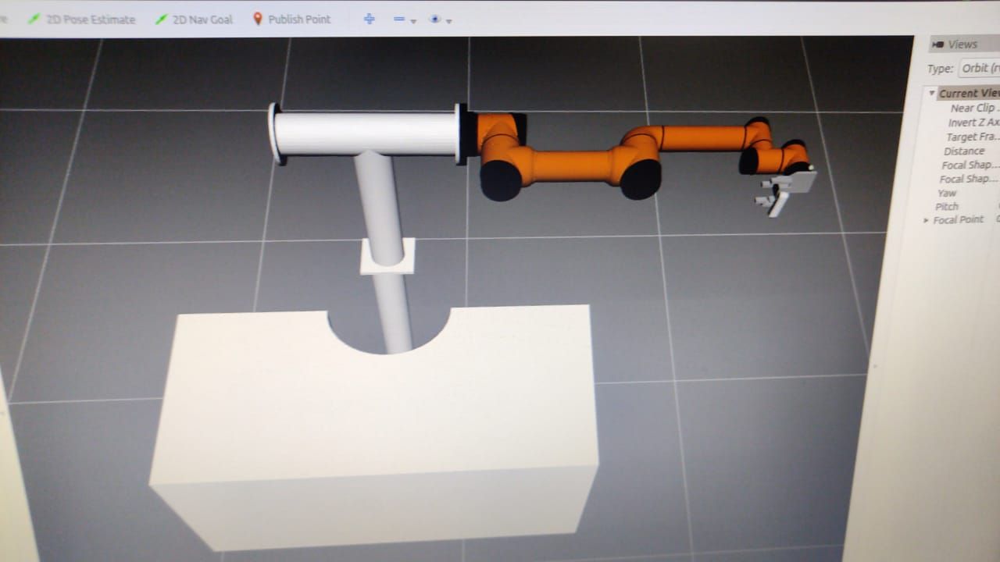

After analyzing all the positions of the Realsense on the robot, I selected the most adequate one which I believe is the position in which it has 6 degrees of freedom and its located on the side of the robot's gripper. To install the Realsense in the robot it was necessary to design a support. To do so, this week was started by modeling a structure that could be screwed to one of the gripper, represented below. After the manufacturing of the support the Realsense was correctly installed.

Now, with the Realsense properly installed, it is fundamental to calibrate its Extrinsic parameters, task which I will continue to do in next weeks.
Robot Aubo-i5In order to know all the transformations between the coordinate systems of the Realsense, the robot and the gripper, I started by including the URDF files of the Aubo-i5 Cobot to have all the coordinate frames of the joints. The referential of the base of the robot was defined as the global coordinate system. Knowing that the URDF files of the aubo-i5 robot does not incorporate the coordinate frame of the gripper center point (TCP), I had to determine the exact length of the gripper. To do so, I visualized the values of the joints, and its coordinate systems, of the real robot in Rviz with the following command.
roslaunch binpicking_system robot_state_visualize.launch
By moving the end effector closer to the table, I was able to determine the difference in the Z-axis between the referencial of the the tip of the gripper and the end of the robot.

By This way, the origin of the referencial end of the gripper was represented with an offset of 26mm. Knowing this, I was now able to design a simple gripper to represent the real one. By incorporating it in the urdf files and the description of the last coordinate system, I could visualize the robot, the gipper in the respective position. The complete coordinate systems so far visualized by using the following command.
roslaunch binpicking_system globalvisualization.launch

Given the fact that, it is necessary to move the robot to positions with accuracy in oder to calibrate the camera sensor and to move to the exact centroid of an object, detected by the program, I used a code developed by Aubo developers. By running the next command I am able to run a program that moves the robot to a desired joint or cartesian position.
rosrun aubo_control aubo_control
Continuation for the state of the art
While deep neural networks have been successfully applied to the problem of object detection in 2D, they have only recently begun to be applied to 3D object detection and pose estimation. Unlike 2D object detection,it is prohibitive to manually label data for 3D detection. Dueto this difficulty of collecting sufficiently large amounts of labeled training data, such approaches are typically trained on real data that are highly correlated with the test data (e.g., same camera, same object instances, similar lighting conditions). As a result, one challenge of existing approaches is generalizing to test data that are significantly different from the training set.
Synthetic data is a promising alternative for training such deep neural networks, capable of generat- ing an almost unlimited amount of pre-labeled training data with little effort. Synthetic data comes with its own problems, however. Chief among these is the reality gap, that is, the fact that networks trained on synthetic data usually do not perform well on real data without additional fine-tuning or othertricks. A recently proposed solution to this problem is domain randomization,in which the training data is randomized in non-realistic ways so that, at test time, real data appears to the network as simply another variation. Domain randomization has proved successful at detecting colored geometric shapes on a table, flying a quadcopter indoors, or learning visuomotor control for reaching or pick-and-place of a brightly colored cube.